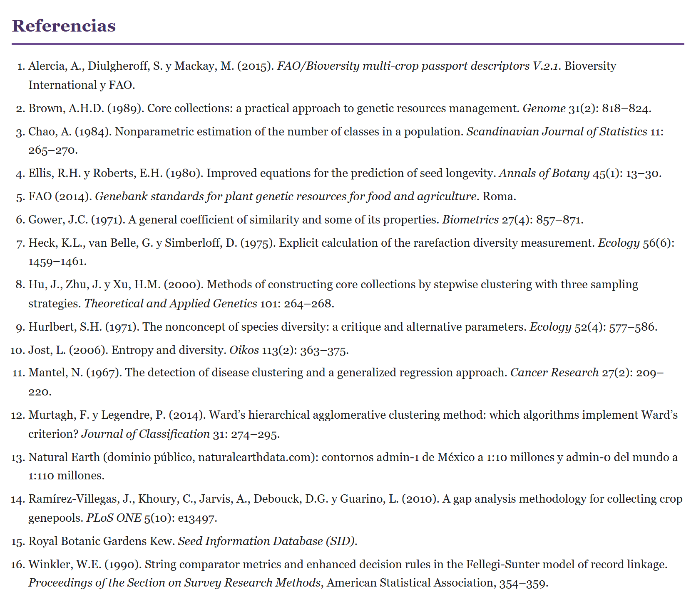

Informe
El último bloque no calcula nada propio: reúne lo que calculan los Bloques 2 a 8 en un documento que se lee solo, con sus cifras, sus figuras, los métodos redactados en prosa y únicamente las referencias de los métodos que se usaron. La vista previa es el archivo mismo: lo que ves es lo que se imprime y lo que se descarga. Además empaqueta todo en un ZIP —el informe, las tablas de trabajo y cada figura en SVG— y exporta el pasaporte en los dos formatos que se usan para compartir germoplasma: MCPD, con el que se entienden los bancos, y Darwin Core, el de GBIF. Este capítulo explica cada control, qué dice cada sección del informe de la colección de ejemplo, de qué bloque sale cada cifra y qué te toca revisar antes de firmar.
- 10.1Qué reúne el informe
- 10.2Título, firma e idioma
- 10.3Las secciones y las figuras
- 10.4El resumen y la colección
- 10.5La calidad de los datos
- 10.6La distribución geográfica
- 10.7Diversidad y vacíos de colecta
- 10.8Caracterización, núcleo y manejo
- 10.9Los métodos redactados y las referencias
- 10.10Imprimir y descargar el informe
- 10.11El paquete ZIP
- 10.12El pasaporte en Darwin Core y en MCPD
10.1Qué reúne el informe
El bloque tiene dos secciones: 1 · Qué lleva el informe, con los datos del encabezado, los botones de las secciones y los cinco botones de salida, y 2 · El informe, tal como sale, con la vista previa. La vista previa no es un dibujo aproximado: es el mismo documento HTML que descargas, metido en un marco de la página. Si no hay accesiones, el bloque dice Primero carga tus accesiones en el Bloque 2.
![El título Bloque 10 · El informe, el párrafo de presentación y la sección 1 · Qué lleva el informe: los campos Título con Informe anual 2026, Banco o institución con Banco de Germoplasma de Ejemplo, Quien firma vacío y el selector Idioma del informe en el de la app; doce botones encendidos: Resumen, La colección, Calidad de los datos, Distribución geográfica, Diversidad geográfica, Vacíos de colecta, Caracterización y núcleo, Manejo del banco, Métodos, Referencias, Anexo: las accesiones y figuras; y los botones Imprimir o guardar en PDF, Descargar el informe (HTML), Descargar todo (ZIP), Pasaporte en Darwin Core y Pasaporte en MCPD](../img/b10-controles.png)
Cada vez que entras al bloque, la app vuelve a correr los análisis de los Bloques 5, 6, 7 y 8 con los ajustes que tengan en ese momento y arma el documento; mientras, enseña su ventana de espera con el texto Armando el informe. No necesitas haber visitado esos bloques: si nunca los abriste, entran con sus valores de fábrica. Por eso, si cambias un ajuste en otro bloque —el tamaño de la rejilla, el umbral de duplicados, el tamaño del núcleo— y vuelves aquí, el informe ya lo refleja.
| Sección | Sale de | Cuándo aparece |
|---|---|---|
| Resumen | Bloques 2, 3, 6 y 8 | Siempre que haya accesiones. |
| La colección | Bloque 2 | Siempre. |
| Calidad de los datos | Bloques 2 y 3 | Siempre: la revisión de calidad se calcula aquí mismo, con el umbral de duplicados y los pares descartados que hayas dejado en el Bloque 3. |
| Distribución geográfica | Bloque 4 | Siempre que el botón figuras esté encendido (apartado 10.3). |
| Diversidad geográfica | Bloque 5 | Siempre; con las unidades y el tipo de diversidad que tenga el Bloque 5. |
| Vacíos de colecta | Bloque 6 | Siempre; con el territorio, la rejilla y los pesos del Bloque 6. |
| Caracterización y núcleo | Bloque 7 | Sólo si cargaste una caracterización en el Bloque 7. Si no, el botón sale apagado y gris. |
| Manejo del banco | Bloque 8 | Siempre; con la configuración de las instalaciones y las constantes del Bloque 8. |
| Métodos | todos | Siempre; un párrafo por análisis presente. |
| Referencias | todos | Siempre; sólo las de los métodos presentes. |
| Anexo: las accesiones | Bloque 2 | Siempre, salvo que lo apagues. |
El Bloque 9 no aporta nada al informe: sus etiquetas y hojas de trabajo se imprimen allá. Y la presentación del bloque dice que «sólo aparece lo que se corrió»; en la práctica, como el informe corre él mismo los Bloques 5, 6 y 8, lo único que puede faltar es la caracterización.
Todos los números de este capítulo salen de la colección de ejemplo del Bloque 2 (botón Abrir la colección de ejemplo), con la caracterización de ejemplo del Bloque 7 y su núcleo de fábrica del 10 %, y con los demás bloques en sus valores de fábrica. La fecha del informe es la del día en que se arma; aquí, el 31 de octubre de 2026.
10.2Título, firma e idioma
Los tres campos de arriba llenan el encabezado del documento. La app los recuerda de una sesión a otra.
| Control | Qué hace |
|---|---|
| Título | El título grande del informe y el nombre de la pestaña del navegador al abrir el archivo. Vacío, el informe se llama Informe de la colección (en inglés, Collection report). |
| Banco o institución | Sale en la línea gris de debajo del título. |
| Quien firma | También en esa línea, después del banco. Escribe el nombre de la persona responsable de la colección. |
| Idioma del informe | el de la app (de fábrica), español o English. Cambia los títulos, las tablas, los textos y los métodos del documento, sin cambiar el idioma de la app. |
La línea del encabezado junta lo que escribiste con la fecha y el número de accesiones, separados por puntos medios. Con el ejemplo dice Banco de Germoplasma de Ejemplo · 31 de octubre de 2026 · 46 accesiones; en inglés la fecha sale como 31 October 2026. Mientras escribes en los tres campos, la vista previa se rehace sin volver a correr los análisis y el cursor se queda en su lugar.
Con English, todo el texto del documento cambia de idioma, pero los letreros de dentro de las figuras no: la curva de acumulación sigue diciendo «accesiones examinadas» y «tipos esperados», y la gráfica de coordenadas principales «eje 1» y «eje 2». Las figuras se dibujan en el idioma de la app. Si necesitas el informe completo en inglés, cambia el idioma de la app con el botón de la barra de arriba antes de entrar al bloque.
10.3Las secciones y las figuras
Debajo de los campos hay un botón por sección, en el orden en que salen en el documento, y al final el botón figuras. Encendido (con fondo de color), la sección entra; con un clic se apaga y la vista previa se rehace. De fábrica entran todas. Un botón gris que no responde es una sección sin datos: al pasar el puntero sobre él dice ese bloque no se ha corrido. Con la colección de ejemplo sólo le pasa a Caracterización y núcleo, hasta que cargas la caracterización en el Bloque 7.
Cualquier sección se puede quitar, también el resumen, los métodos o las referencias. Lo útil es quitar las que no vienen al caso: para el informe anual a la dirección, quizá basta con el resumen, la colección, el manejo y el anexo; para un artículo sobre la diversidad, el resumen, la distribución, la diversidad, los vacíos, los métodos y las referencias. Cuando apagas una sección de análisis, su párrafo de métodos y sus referencias no desaparecen: los métodos se redactan con todo lo que se calculó, salga o no su sección (apartado 10.9).
El botón figuras quita o pone las cinco figuras del informe: el mapa de colecta, la curva de acumulación, el mapa de vacíos, las coordenadas principales y la carga de trabajo. Apagarlo aligera el archivo, pero tiene un efecto que no se ve en los botones:
Con figuras apagado, la sección Distribución geográfica desaparece completa, también sus dos tablas por entidad y por país y la nota de los puntos fuera de México, aunque su botón siga encendido. Las demás secciones pierden sólo la figura. Si quieres las tablas de la distribución sin el mapa, deja las figuras encendidas.
Encender o apagar una sección o las figuras, o cambiar el idioma, vuelve a correr los análisis y tarda un momento.
10.4El resumen y la colección
El documento empieza con el título, la línea del encabezado y el resumen: seis recuadros con las cifras básicas del pasaporte y, debajo, una lista de hallazgos, cada uno contado con su número y en singular o plural según toque.
![El encabezado del informe, Informe anual 2026, con la línea Banco de Germoplasma de Ejemplo · 31 de octubre de 2026 · 46 accesiones; la sección Resumen con seis recuadros: 46 accesiones, 24 taxones, 8 países de origen, 6 rutas de conservación, 45 con coordenadas y 20 con duplicado; y cinco hallazgos: 2 pares de accesiones se parecen lo bastante como para revisarlos por duplicado; 1 accesión no tiene coordenadas, y por eso no entra en los mapas ni en el análisis de vacíos; 26 accesiones no tienen duplicado de seguridad en otra institución; 10 lotes tienen al menos una alerta crítica de manejo; La colecta cubre el 5.5 % de las celdas del territorio analizado](../img/b10-resumen.png)
| Recuadro | Ej. | Qué cuenta |
|---|---|---|
| accesiones | 46 | Los registros del pasaporte. |
| taxones | 24 | Las combinaciones distintas de género y especie (GENUS + SPECIES), sin la subespecie. |
| países de origen | 8 | Los valores distintos de ORIGCTY, tal como están escritos: el «MX» del frijol tepari, uno de los errores sembrados (apartado 3.4), cuenta como un país más. |
| rutas de conservación | 6 | Las rutas con al menos una accesión, declaradas en GP_CONS o deducidas de STORAGE. |
| con coordenadas | 45 | Las que tienen latitud y longitud numéricas. |
| con duplicado | 20 | Las que tienen duplicado de seguridad en otra institución (DUPLSITE distinto de INSTCODE). |
Los hallazgos sólo aparecen cuando hay algo que contar: coordenadas que no concuerdan con el país (de la revisión de calidad), pares candidatos a duplicado, accesiones sin coordenadas, accesiones sin duplicado de seguridad, lotes con alerta crítica (del Bloque 8) y la cobertura de la rejilla (del Bloque 6). Las 26 accesiones sin duplicado son las 46 menos las 20 que sí lo tienen; entre ellas están las 2 poblaciones in situ y las 3 parcelas en finca, que por su naturaleza no tienen duplicado en una cámara. El Bloque 8, que no les pide duplicado, cuenta 21.
La sección La colección describe el pasaporte en cuatro tablas: los diez taxones con más accesiones, los diez países de origen con más accesiones, cuántas accesiones hay por ruta de conservación y con qué porcentaje, y los ocho descriptores obligatorios o recomendados peor llenados.
![La sección La colección: la tabla Taxones más representados con Zea mays 18, Capsicum annuum 3, Sechium edule 3, Phaseolus vulgaris 2 y seis taxones con 1; la tabla Países de origen con México 37, Guatemala 2, Perú 2, Bolivia, Etiopía, India, Colombia y MX con 1; la tabla Cómo se conserva con Banco de semillas 28 (60.9 %), Banco de campo o colección viva 8 (17.4), Cultivo in vitro 3 (6.5), Conservación en la parcela (on-farm) 3 (6.5), Reserva genética (in situ) 2 (4.3) y Criopreservación 1 (2.2); y la tabla Descriptores obligatorios o recomendados peor llenados con Fecha de ingreso al banco 41 (89 %), Tipo de almacenamiento 41 (89), Latitud decimal, Longitud decimal y Altitud 45 (98) y Código del instituto, Número de accesión y Género 46 (100)](../img/b10-coleccion.png)
La tabla de rutas suma 45 accesiones y 97.8 %, no 46 y 100 %: el chile costeño (MEX-CH-0042), que no declara ruta ni almacenamiento, no aparece en ella; en el anexo sale con una raya en la columna de la ruta. La tabla de descriptores sirve de lista de tareas para el Bloque 2: aquí, cinco accesiones sin fecha de ingreso (ACQDATE) y cinco sin tipo de almacenamiento (STORAGE). Si todos los descriptores están completos, la tabla enseña los ocho primeros con 100 %.
El informe da tres cuentas distintas de la diversidad de especies, y las tres son correctas: 24 taxones en el resumen, que son todas las especies del pasaporte; 18 tipos en total en la diversidad geográfica, que son las especies de las accesiones que caen dentro de una entidad de México, porque las unidades del Bloque 5 de fábrica son las entidades; y 20 tipos con una sola accesión entre los riesgos de los vacíos, que el Bloque 6 cuenta sobre toda la colección. Al citar una cifra, di de qué conjunto sale.
10.5La calidad de los datos
La sección resume la revisión del Bloque 3 en seis recuadros, enseña los diez pares candidatos a duplicado con más puntaje y cierra con una nota: un par con puntaje alto no es un duplicado probado, y la fusión se hace a mano en el Bloque 3.
![La sección Calidad de los datos con seis recuadros: 0 coordenadas imposibles, 0 coordenadas sospechosas, 0 avisos de consistencia, 4 correcciones propuestas, 2 pares candidatos a duplicado y 29 avisos del pasaporte; la tabla Pares con mayor puntaje con MEX-ZM-0002 + MEX-ZM-0045, puntaje 100, 6.2 km, el mismo taxón, el mismo número de colecta (LAB-2019-101), nombres casi idénticos (100 %), a 6.2 km una de otra, la misma fecha de colecta, la misma misión de colecta; y MEX-SE-0029 + MEX-SE-0046, 100, 2.0 km; debajo, la nota sobre los pares de puntaje alto](../img/b10-calidad.png)
| Recuadro | Informe | De dónde sale |
|---|---|---|
| coordenadas imposibles | 0 | Las coordenadas que no caen en el país declarado y tienen diagnóstico. El Bloque 3 encuentra una: MEX-ZM-0039, con la longitud sin signo (apartado 3.2). |
| coordenadas sospechosas | 0 | Las dudosas: latitud igual a la longitud, valores redondos, fuera del país sin diagnóstico. |
| avisos de consistencia | 0 | Nombres escritos de varias maneras y catálogos incoherentes; el Bloque 3 tampoco encuentra ninguno. |
| correcciones propuestas | 4 | Las del Bloque 3: el signo de la longitud, «MX» por «MEX», «BOLITA AMARILLO» en mayúsculas y los espacios de más del chayote. |
| pares candidatos a duplicado | 2 | Los pares por encima del umbral del Bloque 3, menos los que hayas descartado. |
| avisos del pasaporte | 29 | Los problemas de la validación del Bloque 2 (apartado 2.6). |
En esta versión, el recuadro coordenadas imposibles siempre dice 0 y, por la misma causa, el resumen nunca trae el hallazgo de las coordenadas que no concuerdan con su país, aunque el Bloque 3 las tenga. Con la colección de ejemplo falta MEX-ZM-0039, cuyo punto cae en Birmania (apartado 10.6). Antes de entregar el informe, mira el recuadro Problemas de ubicación del Bloque 3 y, si no es cero, aplica la corrección o dilo tú en el texto.
La tabla de pares enseña los números de las dos accesiones, el puntaje redondeado, la distancia entre los puntos de colecta y las razones del parecido, con las mismas palabras que el Bloque 3. Con los dos pares sembrados en la colección de ejemplo —el maíz Bolita amarillo y el chayote verde liso, capturados dos veces— la tabla tiene dos filas, las dos con puntaje 100. Si fusionas los pares en el Bloque 3, desaparecen del informe.
10.6La distribución geográfica
La sección pone el mapa de colecta del Bloque 4 con el encuadre que tenga ese bloque (con el ejemplo, el mundo entero, porque hay accesiones de otros continentes), y debajo dos tablas: las doce entidades de México y los doce países con más accesiones, contados por la coordenada, no por el texto del pasaporte.
![La sección Distribución geográfica: el mapa del mundo con los puntos de colecta concentrados en México, Guatemala, Colombia, Perú y Bolivia y uno en Etiopía, uno en la India y uno en Birmania, con la flecha del norte y una barra de escala de 5,000 km; el pie Sitios de colecta de las 45 accesiones georreferenciadas; la tabla Por entidad de México con Oaxaca 7, Puebla 7, Veracruz 6, Chiapas 4, Michoacán 3, Chihuahua, Yucatán, México y Jalisco 2 y Sonora 1; la tabla Por país con México 36, Guatemala 2, Perú 2 y Bolivia, Etiopía, India, Colombia y Birmania 1; y la nota 9 de los puntos caen fuera de México](../img/b10-mapa.png)
Ahí se nota la diferencia entre lo declarado y lo medido: la sección La colección cuenta 37 accesiones de México por ORIGCTY, y esta, 36 puntos dentro de México, porque el tuxpeño de la costa (MEX-ZM-0039), que dice ser de México, tiene la longitud sin signo y cae en Birmania. El frijol tepari, declarado «MX», sí cae en Sonora. La nota de abajo dice cuántos puntos quedan fuera de México: 9 de los puntos caen fuera de México, así que sólo aparecen en el conteo por país. Las entidades que suman 36 son las diez de la tabla; con más de doce, las demás no se enseñan.
Los colores de los puntos son los del Bloque 4, pero el informe no trae su leyenda; si el color importa para tu texto, explica en el pie de la figura qué representa, o toma el mapa del Bloque 4 (capítulo 4), que sí la trae.
10.7Diversidad y vacíos de colecta
La sección Diversidad geográfica toma el análisis del Bloque 5: cinco recuadros con la colección entera, una tabla con las doce unidades más ricas, la curva de acumulación con sus estimadores, una nota cuando Chao1 no es fiable y la prueba de Mantel en una frase.
![La sección Diversidad geográfica con cinco recuadros: 18 tipos en total, 2.34 Shannon del conjunto, 5.67 beta de Whittaker, 116 tipos estimados (Chao1) y 61.1 % cobertura del muestreo; la tabla con Unidad, n, Riqueza, Shannon, Pielou y Exclusivos para Puebla 7, 5, 1.48, 0.92; Veracruz 6, 4, 1.24, 0.90; Chiapas 4, 4, 1.39, 1.00; Oaxaca 7, 3, 0.80, 0.72; Michoacán, Yucatán, México, Jalisco, Chihuahua y Sonora, todas con 0 exclusivos; la curva de acumulación hasta 36 accesiones con las líneas Chao2 119, Chao1 116, Jackknife 2 43 y Jackknife 1 32; la nota sobre Chao1 y la frase Prueba de Mantel entre composición y distancia geográfica: r = -0.422, p = 0.123 con 999 permutaciones sobre 9 unidades](../img/b10-diversidad.png)
Los recuadros son los del Bloque 5 (capítulo 5): 18 especies en las 36 accesiones que caen en una entidad, un Shannon de 2.34 para el conjunto, una beta de Whittaker de 5.67, y una cobertura de Good-Turing del 61.1 %. El Chao1 de 116 tipos, seis veces lo observado, va acompañado de la nota El estimador Chao1 se apoya en el número de tipos vistos dos veces, y aquí hay muy pocos: tómese como una cota grosera y préstese más atención a Chao2 y a la navaja. Con 36 accesiones, ninguna estimación de la riqueza total es firme; la curva, que sigue subiendo, dice lo mismo sin números.
En esta versión, la columna Exclusivos del informe vale 0 en todas las unidades. El Bloque 5, con la misma colección, cuenta 4 especies exclusivas en Puebla, 4 en Veracruz, 3 en Chiapas y 1 en Michoacán, el Estado de México, Jalisco y Sonora. Si los exclusivos te importan —son lo que se perdería con la unidad—, tómalos de la tabla del Bloque 5 o de su CSV.
La sección Vacíos de colecta toma el análisis del Bloque 6 (capítulo 6): cuatro recuadros —cobertura de la rejilla, celdas con colecta, celdas vacías y sitios del conjunto mínimo—, el mapa de celdas con las diez prioridades numeradas, la tabla de esas diez prioridades, la tabla de tipos en riesgo y una nota que recuerda que el análisis es geográfico y de composición, no ecogeográfico.

La tabla de prioridades da, para cada celda, su centro, la entidad, la distancia al punto colectado más cercano y el puntaje: la primera es la celda de 21.50, −99.50 en San Luis Potosí, a 228 km de la colecta más cercana, con 86.9 puntos; la décima, la de 20.50, −99.50 en Hidalgo, con 70.0. La tabla de riesgos cuenta cuántos tipos tienen cada señal del Bloque 6: 20 con una sola accesión, 14 sin duplicado de seguridad, 6 sólo en banco de campo, 1 sólo in situ, sin respaldo ex situ y 1 todo de una sola entidad o país. Un mismo tipo puede tener varias señales, así que la columna no se suma.
10.8Caracterización, núcleo y manejo
La sección Caracterización y colección núcleo sale sólo si cargaste una caracterización en el Bloque 7. Trae cuatro recuadros, la gráfica de coordenadas principales, la tabla de los cuatro indicadores de validación del núcleo con lo que dice cada uno, y una nota cuando el núcleo tiene menos de diez accesiones.
![La sección Caracterización y colección núcleo con cuatro recuadros: 46 accesiones caracterizadas, 12 descriptores, 5 accesiones en el núcleo y 0.14 silueta media; la gráfica de coordenadas principales con los puntos de color por grupo y cinco puntos grandes con borde; debajo, la leyenda deshecha en renglones: un punto y G1, un punto y G2, un punto y G3, un punto y G4símbolo grande y con borde = está en el núcleo; el pie Coordenadas principales sobre la distancia de Gower; en color, las accesiones del núcleo; la tabla MD% 0.0, VD% 62.5, CR% 75.2, VR% 91.4 y la nota El núcleo tiene menos de diez accesiones](../img/b10-nucleo.png)
Las cifras son las del Bloque 7 (capítulo 7): 46 accesiones caracterizadas con 12 descriptores, 4 grupos con silueta media de 0.14, y un núcleo de 5 accesiones —MEX-AG-0024, MEX-TC-0027, MEX-CU-0040, MEX-CH-0042 y MEX-ZM-0043—, el 10.9 % de las caracterizadas. La validación da MD% = 0.0, VD% = 62.5, CR% = 75.2 y VR% = 91.4, y como el núcleo tiene menos de diez accesiones, el informe añade: El núcleo tiene menos de diez accesiones: las pruebas t y F de la validación no tienen potencia y sus porcentajes se leen con reserva.
En el informe, la leyenda de la gráfica de coordenadas principales sale deshecha: cada grupo en su renglón, con el punto de color arriba del nombre, y el último pegado a la explicación del símbolo («G4símbolo grande…»). Además, el pie dice «en color, las accesiones del núcleo», pero los colores son los grupos del agrupamiento; las del núcleo son los puntos grandes con borde. Si usas la figura fuera de la app, toma la versión en SVG del Bloque 7 o del paquete ZIP y corrige el pie.
La sección Manejo del banco toma el tablero del Bloque 8 (capítulo 8): cuatro recuadros, una tabla con las alertas y cuántos lotes tienen cada una, la gráfica de la carga de trabajo de los próximos 25 años y una nota: una proyección de viabilidad no sustituye a una prueba de germinación.
![La sección Manejo del banco con cuatro recuadros: 10 lotes con alerta crítica, 21 lotes con aviso, 15 lotes con viabilidad proyectada y 14 sin constantes publicadas; la tabla Alerta y Lotes, con un punto rojo, ocre o azul: La última prueba dio 81 %, por debajo del umbral de 85 %. Para regenerar con 100 plantas hay que sembrar unas 138 semillas, 4; Van 33 meses desde el último subcultivo, 3; Sólo quedan 12 plantas, 3; Van 9.0 años desde la última resiembra, 2; No hay fecha de la última resiembra, 2; Van 8.2 años desde que entró al banco, 1; No hay constantes de viabilidad para Phaseolus vulgaris, 14; Sin duplicado de seguridad en otra institución, 21; Hace 5.4 años que no se registra una visita al sitio, 5; Las existencias (430) se acercan al mínimo, 2; la gráfica de barras apiladas de la carga de trabajo de +0 a +25, con picos de unas 25 tareas en +7 y +17; la leyenda pegada en un renglón y el pie](../img/b10-manejo.png)
Los recuadros coinciden con el tablero del Bloque 8: 10 lotes en apuros, 21 que piden atención y 15 lotes de maíz con viabilidad proyectada; los 14 sin constantes publicadas son los 13 lotes de semilla de las demás especies y el chile costeño, que no declara ruta. El punto de color de cada alerta es su gravedad: rojo, crítica; ocre, aviso; azul, informativa.
Cada fila de la tabla junta todos los lotes con el mismo tipo de alerta, pero el texto de la fila es el mensaje del primero de ellos, con sus cifras. «La última prueba dio 81 %… unas 138 semillas» con 4 lotes no quiere decir que los cuatro dieron 81 %: es el teocintle de Balsas (MEX-ZP-0011); los otros tres son el frijol vaquita con 84 %, el frijol tepari con 79 % y el maíz ancho de riego con 72 %. Lo mismo pasa con «No hay constantes de viabilidad para Phaseolus vulgaris» en 14 lotes de especies distintas, o con «Las existencias (430)». Lee la fila como «tipo de alerta» y busca los lotes y sus cifras en la tabla del Bloque 8 o en datos/plan-de-trabajo.csv del paquete (apartado 10.11).
La leyenda de la gráfica de carga de trabajo también sale sin sus cuadros de color y con los nombres pegados («pruebas de germinaciónregeneraciones…»). Los colores son, en orden: pruebas de germinación, regeneraciones, resiembras de campo y subcultivos in vitro; los picos de los años +7 y +17 son las pruebas de germinación de 22 lotes de semilla que vencen juntas.
Al final del documento va el anexo: una fila por accesión con su número, nombre, especie (sin subespecie), país de origen como código ISO (MEX, GTM…), sitio de colecta, ruta de conservación y existencias. Es la lista que se archiva con el informe; si no la necesitas, apaga su botón.
10.9Los métodos redactados y las referencias
La sección Métodos es lo que el bloque tiene de más útil y lo que exige más cuidado. La app escribe en prosa un párrafo por cada análisis presente, con las cifras y los ajustes que tomó de cada bloque, listo para pegarse en la sección de materiales y métodos de un informe o un artículo. Lo que no se calculó no aparece.
![El principio de la sección Métodos con tres párrafos: Datos de pasaporte, que empieza La colección se describió con los descriptores multicultivo de pasaporte MCPD v2.1 (Alercia et al., 2015) y dice Se registraron 46 accesiones; Control de calidad y duplicados, que habla de la caja envolvente del país, la distancia de Levenshtein, el esquema de bloqueo, Jaro-Winkler (Winkler, 1990) y termina Se examinaron 2 pares candidatos; y Cartografía, sobre los contornos de Natural Earth y la asignación por inclusión del punto en el polígono](../img/b10-metodos.png)
| Párrafo | Lo que dice, con las cifras del ejemplo |
|---|---|
| Datos de pasaporte | MCPD v2.1 con siete campos propios; «Se registraron 46 accesiones»; la validación por descriptor y entre campos. |
| Control de calidad y duplicados | Las tres equivocaciones de coordenadas, Levenshtein, el esquema de bloqueo y la puntuación con Jaro-Winkler; «Se examinaron 2 pares candidatos». |
| Cartografía | Natural Earth sin conexión y la asignación por punto en polígono. |
| Diversidad geográfica | La unidad y el tipo del Bloque 5 («por entidad federativa», «de especie»), los índices, la rarefacción, los estimadores, la beta y la prueba de Mantel «con 999 permutaciones». |
| Vacíos de colecta | La rejilla «de 1°», los cuatro pesos del índice de prioridad (40, 25, 20 y 15), la complementariedad voraz y lo que el análisis no es. |
| Caracterización y colección núcleo | «Se caracterizaron 46 accesiones con 12 descriptores»; Gower, coordenadas principales, Ward, la silueta, el núcleo «del 10 %», Brown e indicadores de Hu et al. |
| Viabilidad y manejo | La ecuación de Ellis y Roberts, qué se hizo sin constantes y el número de plantas para conservar un alelo. |
| Programa | Que todo se calculó con GermplasmPro, en el navegador y sin enviar datos. |
La app redacta con lo que sabe; tú firmas. Lee cada párrafo antes de copiarlo y comprueba que dice lo que hiciste. En esta versión, el de caracterización no sigue tus ajustes del Bloque 7: dice siempre que el agrupamiento se hizo por el método de Ward, que el número de grupos se eligió con el ancho de silueta y que el núcleo retuvo el 10 % repartido entre estratos. Con UPGMA, 3 grupos y un núcleo del 20 % (9 accesiones) el párrafo sale idéntico. En realidad, el número de grupos lo eliges tú en el selector Grupos, y con el método M el núcleo no se reparte entre estratos. Corrige esas frases a mano.
Añade lo que la app no puede saber: de dónde vienen los datos de pasaporte y de caracterización, quién colectó y con qué permiso, qué condiciones tiene tu cámara, por qué elegiste cada ajuste. Y si después de descargar el informe cambias algo en un bloque, el texto viejo queda desactualizado: vuelve a entrar al Bloque 10 y descárgalo de nuevo.
Las referencias son sólo las de los métodos presentes, en orden alfabético y numeradas. Con el ejemplo completo son 16: Alercia et al. (2015), Brown (1989), Chao (1984), Ellis y Roberts (1980), FAO (2014), Gower (1971), Heck et al. (1975), Hu et al. (2000), Hurlbert (1971), Jost (2006), Mantel (1967), Murtagh y Legendre (2014), Natural Earth, Ramírez-Villegas et al. (2010), la Seed Information Database de Kew y Winkler (1990).
Antes de usarlas, cruza la lista con el texto. Cuatro referencias no están citadas en los métodos: FAO (2014) y la base de datos de Kew no se nombran en ningún párrafo, la prueba de Mantel aparece sin «(Mantel, 1967)» y el método de Ward sin «(Murtagh y Legendre, 2014)». Al revés, la silueta, Chao2, la navaja, Good-Turing y los índices de Jaccard, Sørensen y Bray-Curtis se nombran sin referencia. Cita cada método con su fuente original o borra la referencia que no uses; las referencias completas de esos métodos están en el apéndice E.
El informe no trae la cita del propio programa. Agrégala a las referencias tal como la da la portada de la app (apartado 1.8):

10.10Imprimir y descargar el informe
El botón Imprimir o guardar en PDF abre el diálogo de impresión del navegador sólo con el informe, sin la app alrededor. Para un PDF, elige Guardar como PDF como impresora. Si el navegador no deja imprimir el marco, la app abre el informe en una pestaña nueva y lo imprime desde ahí; si además el navegador bloquea las ventanas nuevas, dice El navegador bloqueó la ventana; descarga el informe y ábrelo con doble clic.
El botón Descargar el informe (HTML) guarda el documento como informe-2026-10-31.html (con la fecha del día) y dice Informe descargado. durante cuatro segundos. Es un solo archivo de unos 310 kB, con las figuras dentro, sin tipografías ni archivos externos: se abre con doble clic en cualquier navegador, sin internet, y se puede imprimir desde ahí, o abrir con un procesador de textos para editarlo.
Impreso a PDF en hoja carta, con márgenes de fábrica y sin encabezados del navegador, el informe completo ocupa 14 hojas: el resumen y la colección en la primera y media, la calidad, el mapa y la diversidad hasta la quinta, los vacíos de la quinta a la séptima, la caracterización y el manejo hasta la novena, los métodos en dos hojas, las referencias en una, y el anexo de 46 accesiones en las tres últimas. El texto va en letra con remates de 10.5 puntos y las tablas en letra sin remates; los números de las tablas, alineados a la derecha.
Al imprimir, el navegador no parte una figura ni una tabla corta, y la pasa entera a la hoja siguiente. Eso deja algunos huecos: en el ejemplo, la hoja de los vacíos queda a medias porque el mapa no cabe debajo de los recuadros, y los subtítulos Por entidad de México y Tipos en riesgo quedan solos al pie de una hoja, separados de su tabla. En el anexo, los números de accesión se parten en dos renglones («MEX-ZM-» y «0001»). Nada de eso cambia el contenido; si el PDF va a una publicación, ábrelo antes y, si hace falta, quita secciones para acomodar las hojas.
10.11El paquete ZIP
El botón Descargar todo (ZIP) arma un paquete con el informe, las tablas de trabajo y las figuras sueltas, y lo guarda como germplasmpro-2026-10-31.zip. Mientras lo arma dice Armando el paquete… y al terminar cuenta los archivos: con el ejemplo completo, 15 archivos en el paquete. El ZIP lo escribe la propia app, sin bibliotecas de fuera.
| Archivo | Qué es |
|---|---|
| informe.html | El informe, idéntico al de la vista previa: con las secciones, las figuras y el idioma que hayas elegido. |
| datos/pasaporte-mcpd.csv | El pasaporte con los 42 descriptores MCPD v2.1 (apartado 10.12). |
| datos/pasaporte-completo.csv | Los 42 descriptores y los siete campos propios GP_: 49 columnas. |
| datos/darwin-core.csv | El pasaporte en Darwin Core (apartado 10.12). |
| datos/calidad.csv | Una fila por hallazgo de la revisión de calidad: tipo (geografía, consistencia o duplicado), nivel, accesion, campo y detalle. Sólo si hay hallazgos. |
| datos/plan-de-trabajo.csv | Una fila por alerta de cada lote del Bloque 8: accesion, taxon, ruta, nivel, alerta y detalle, con las cifras de cada lote. Sólo si hay alertas. |
| figuras/*.svg | Ocho figuras en SVG de 900 píxeles de ancho, con los colores del tema claro: mapa-de-colecta, curva-de-acumulacion, mapa-de-diversidad, vacios-de-colecta, curva-de-complementariedad, coordenadas-principales, dendrograma y carga-de-trabajo. Sólo con el botón figuras encendido; las del Bloque 7, sólo con caracterización. |
| LEEME.txt | Qué trae el paquete, la fecha y la hora en que se generó, el número de accesiones y de archivos, y la diferencia entre los tres formatos del pasaporte. |
El paquete trae tres figuras que el informe no lleva —el mapa de diversidad, la curva de complementariedad y el dendrograma— y, en cambio, las figuras sueltas no llevan pie: escríbelo tú al meterlas en otro documento. Como el SVG es vectorial, se amplía sin perder nitidez y se edita en cualquier programa de dibujo; si la revista pide un formato de imagen, conviértelo con tu programa de dibujo.
El paquete es la fotografía de la colección en una fecha: el pasaporte tal como estaba, las tablas que respaldan cada cifra del informe y las figuras. Guárdalo junto con el informe firmado y el libro de registro del Bloque 9 (apartado 9.9). Para volver a abrir la colección en la app, usa pasaporte-completo.csv en el Bloque 2: es el único de los tres que conserva la ruta, las existencias y las fechas de germinación y regeneración en sus propias columnas.
10.12El pasaporte en Darwin Core y en MCPD
Los dos últimos botones exportan sólo el pasaporte, sin informe, en CSV con codificación UTF-8 y separador de coma:
- Pasaporte en MCPD guarda pasaporte-mcpd-2026-10-31.csv con los 42 descriptores MCPD v2.1, en el orden del estándar y con sus nombres (
PUID,INSTCODE,ACCENUMB…), y dice 46 accesiones en MCPD v2.1. Es el formato para mandar la lista a otro banco o a un sistema de información de germoplasma. Los camposGP_se quedan fuera. - Pasaporte en Darwin Core guarda darwin-core-2026-10-31.csv con 33 columnas de Darwin Core, el estándar de GBIF, y dice 46 registros en Darwin Core.
Diecinueve descriptores MCPD tienen término propio en Darwin Core y se traducen; los otros treinta —entre ellos SAMPSTAT, STORAGE, MLSSTAT, DUPLSITE y los siete GP_— viajan en la columna dynamicProperties como un objeto JSON, con su nombre original precedido de mcpd:. Entre las columnas traducidas y esa, el archivo guarda el pasaporte completo.
| Término de Darwin Core | Sale de | MEX-ZM-0001 |
|---|---|---|
occurrenceID | INSTCODE:ACCENUMB | MEX006:MEX-ZM-0001 |
basisOfRecord | la ruta | LivingSpecimen (in situ y en finca: HumanObservation) |
collectionCode | fijo | germplasm |
recordedBy | COLLNAME o COLLCODE | MEX006 |
eventDate, year, month, day | COLLDATE | 2019-08-12 · 2019 · 8 · 12 |
scientificName | GENUS SPECIES SUBTAXA | Zea mays |
country, countryCode | ORIGCTY | México · MX |
decimalLatitude, decimalLongitude, geodeticDatum | DECLATITUDE, DECLONGITUDE | 17.6871 · −97.2788 · EPSG:4326 |
minimum- y maximumElevationInMeters | ELEVATION | 1993 · 1993 |
samplingProtocol | COLLSRC | Troje o almacén del agricultor |
degreeOfEstablishment | SAMPSTAT de 300 a 599 | cultivated |
preparations | la ruta | Banco de semillas |
dynamicProperties | los 30 restantes | {"mcpd:ACCENAME":"Maíz azul de Apoala", "mcpd:SAMPSTAT":"300", "mcpd:STORAGE":"13;40", … "mcpd:GP_GERMPCT":"88", …} |
Antes de subir el archivo a GBIF o a un portal de datos, revisa tres cosas. Los valores de country, samplingProtocol, georeferenceProtocol y preparations salen en español aunque el informe esté en inglés. En recordedBy, que en Darwin Core es la persona que colectó, la app pone el código del instituto colector cuando no hay nombre (COLLNAME). Y lo silvestre no tiene término en degreeOfEstablishment: se deja vacío y el código SAMPSTAT completo va en dynamicProperties. Si el país está mal escrito en el pasaporte, como el «MX» del frijol tepari, country y countryCode quedan vacíos: corrige antes el pasaporte en el Bloque 3.
Cuando algo no sale
| Lo que ves | Por qué pasa y qué hacer |
|---|---|
| Primero carga tus accesiones en el Bloque 2. | No hay pasaporte. Carga tu colección o la de ejemplo (capítulo 2). |
| El botón Caracterización y núcleo está gris | No hay caracterización cargada. Cárgala en el Bloque 7 (capítulo 7) y vuelve. |
| Desapareció la distribución geográfica | Apagaste figuras, que quita la sección completa (apartado 10.3). Enciéndelo. |
| coordenadas imposibles en 0 aunque el Bloque 3 marque problemas de ubicación | Es un defecto de esta versión (apartado 10.5). Corrige las coordenadas en el Bloque 3 o dilo en el texto. |
| La columna Exclusivos en 0 | Defecto de esta versión (apartado 10.7). Toma los exclusivos del Bloque 5. |
| Los métodos no dicen el tamaño de núcleo ni el agrupamiento que elegí | El párrafo de caracterización es fijo en esta versión (apartado 10.9). Corrígelo a mano. |
| Una fila de alertas da cifras de un solo lote | La fila muestra el mensaje del primer lote (apartado 10.8). Mira los demás en el Bloque 8 o en el plan de trabajo del ZIP. |
| El informe en inglés tiene figuras en español | Las figuras siguen el idioma de la app (apartado 10.2). Cambia el idioma de la app. |
| Cambié un ajuste en otro bloque y el informe descargado no lo tiene | El informe se arma al entrar al bloque. Vuelve al Bloque 10 y descarga de nuevo. |
| El navegador bloqueó la ventana; descarga el informe y ábrelo con doble clic. | El navegador no dejó abrir la pestaña para imprimir. Descarga el HTML e imprímelo desde ahí, o permite las ventanas emergentes para la app. |
| Subtítulos solos al pie de una hoja o media hoja en blanco en el PDF | El navegador no parte figuras ni tablas (apartado 10.10). Quita secciones o acepta los huecos. |
| El ZIP trae menos de 15 archivos | No hay hallazgos de calidad, ni alertas, ni caracterización, o las figuras están apagadas: cada uno quita sus archivos. |
| Si el informe va a la dirección o al informe anual | entonces deja el resumen, la colección, el manejo y el anexo, y llena el banco y quien firma. |
| Si va a un artículo | entonces usa los métodos como borrador: corrige el párrafo de caracterización, cita cada método con su fuente y añade la cita del programa. |
| Si el Bloque 3 marca problemas de ubicación o pares por encima del umbral | entonces resuélvelos allá antes de armar el informe; el informe no cuenta las coordenadas imposibles. |
| Si cambiaste un ajuste en otro bloque | entonces vuelve a entrar al Bloque 10 y descarga de nuevo. |
| Si el informe va en inglés | entonces cambia también el idioma de la app, para que las figuras salgan en inglés. |
| Si necesitas las figuras en otro documento | entonces descarga el ZIP y usa los SVG de figuras/, con tu propio pie. |
| Si vas a compartir la lista con otro banco | entonces manda el pasaporte en MCPD. |
| Si vas a publicar los datos en GBIF | entonces usa Darwin Core y revisa recordedBy, el idioma de los textos y los países vacíos. |
| Si cierras el año | entonces archiva el ZIP con el informe firmado y el libro de registro del Bloque 9. |
Con esto se cierran los diez bloques. El informe dice lo que la colección y los análisis dicen, pero la interpretación, las fuentes y la firma son tuyas. Lo que sigue en el manual son los apéndices: los archivos que la app lee y escribe, las reglas de decisión reunidas, el glosario, qué hacer cuando algo no sale, las referencias y la licencia.